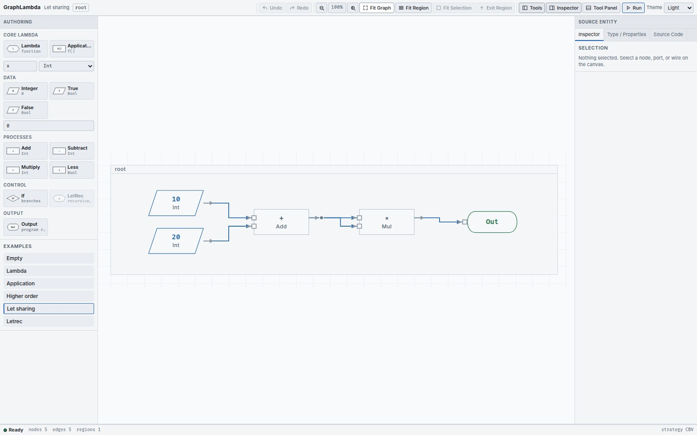

Read the wires as a program
Nodes compute or introduce scope. Ports say where values enter and leave. Directed wires connect producers to consumers.
The node vocabulary
| Palette item | Ports and purpose |
|---|---|
| Integer; True; False |
A literal with one
out
port. True and False create the same Boolean node kind with different values.
|
| Add; Subtract; Multiply |
Two integer inputs,
left
and
right
, and an integer
out
.
|
| Less |
Two integer inputs; a Boolean
out
representing strict less-than.
|
| Lambda | A parameter declaration, a body-result input and a function-value output. Owns a BODY region. |
| Application |
function
,
argument
and
result
ports. The node is named
Apply
in diagnostics.
|
| If |
A Boolean
condition
, THEN and ELSE body-result inputs and one
result
output.
|
| LetRec | Wraps a selected Lambda in a recursive scope. Has definition, recursive declaration, body and result ports. |
| Output |
One
value
input. Identifies the program result; it is not a printing instruction.
|
Data uses parallelograms; arithmetic and application use process rectangles; Lambda and LetRec use preparation hexagons; If uses a decision diamond; Output uses a terminator. Variable occurrences can also appear as small inline parallelograms on binder-use edges.
Make or remove a connection
Start at an output , then click or drag to an input . A target input accepts one producer. One output may feed several consumers. Every completed wire points toward its consumer; a wire routed leftward does not reverse its meaning.
Press Escape to cancel a pending connection. If a proposed connection has the wrong type, escapes a scope or introduces an illegal cycle, the editor reports the reason and keeps the existing graph. Select a wire to inspect its endpoints and type or disconnect it.
Ordinary connected sockets do not print all their role names on the chart. Hover their titles and use the Inspector when you need the exact role. Function, argument and result remain separate ports even when their captions are hidden.
Sharing is fan-out


let x = 10 + 20 in x * x
The graph has one Add producer and two consumers of its value. The producer computes
30
once, and Multiply returns
900
. There is no ordinary Let node in the palette: the binding becomes graph sharing. The displayed junction has no independent runtime value.
Open inputs are typed holes
An unconnected input is marked
? : expected-type
. It remains visible while you build. Unknown or unresolved types use a different socket and dotted wire notation; they do not supply a value. Incomplete graphs can be inspected and edited, but cannot run.
Move the picture
Drag a node’s title bar to move it. Moving an owner carries its nested regions. Enclosing frames fit their contents automatically. Zoom with the mouse wheel or toolbar; pan with the middle mouse button or Shift+drag.
Fit Graph returns to the root and fits the complete graph; Fit Region fits the current region; Fit Selection centres the selected node. These operations change the view, not the computation.